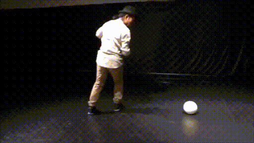

Mimebot: Sphere-shaped Mobile Robot Imitating Rotational Movement
Shuehi Tsuchida,
Tatsuya Takemori,
Tsutomu Terada,
Masahiko Tsukamoto


Abstract
We propose a mobile robot that can give the audience the optical illusion of the unique movements of a sphere by mounting a spherical light-emitting diode (LED) display on a high-agility wheeled robot. This paper examines a mobile robot in the shape of a ball that is used in theatrical performances and reveals that the movements that are difficult to implement with existing mechanisms can nonetheless be visualized through the use of light. Mimebot: Sphere-shaped Mobile Robot Imitating Rotational Movement (MoMM2016
presentation tsuchida) from Shuhei
Tsuchida
Japanese ver.

LINKS
Performance
This is a performance that combines mime and Mimebots. Mimebots use illusory light effects to give the audience the impression that the sphere is rolling. As such, Mimebots can not only express realistic spherical movements, but also express motions that are inconsistent with the laws of physics, such as appear to roll uphill. Also, through the use of realistic spherical movements, Mimebots can create optical illusions using their surrounding environment. For example, by pretending to have crashed into a wall the sphere can express the existence of an invisible wall. In this manner, Mimebots express themselves much like human mime artists do.Mime x Mimebots
- Performer
- LED Display Ball
- Takemori Tatsuya
- Shuhei Tsuchida
- Spherical Robot
- Base Robot
- Software
- Shuhei Tsuchida
- Movies for LED Display Ball
- Yuma Ito
- Support
- Yukako Takeuchie
- Nur Wahida
- Taiga Tanaka
- Hiroto Shozude
- Special Thanks
- Chiaki Hayashi
- Takahiro Miyashita
- Tsutomu Terada
- Masahiko Tsukamoto
- Tsukamoto Terada Laboratory
Mime x Mimebots (30sec Digest ver.)
Mime x Mimebots (Multiple angle ver.)
Mime x Mimebots (Multiple angle, parralel ver.)
LED Display Ball Effects
Related Article
ロボスタ: 【第一回サービスロボット開発技術展レポート(2)】神戸大学、富士ソフト、iPresence合同会社、i-RooBO Network (05/28/2016).
[LINK]
日刊工業新聞: 若手研究者発のロボットに出会える！「Robotics×Future 2016」(02/22/2016).
[LINK]
MoguraVR: 失禁体験、喉から手が出。学生VRコンテスト「IVRC」で体験した驚きのアイデア（後編） (09/14/2015).
[LINK]
ロボスタ: 【第一回サービスロボット開発技術展レポート(2)】神戸大学、富士ソフト、iPresence合同会社、i-RooBO Network (05/28/2016).
[LINK]
日刊工業新聞: 若手研究者発のロボットに出会える！「Robotics×Future 2016」(02/22/2016).
[LINK]
MoguraVR: 失禁体験、喉から手が出。学生VRコンテスト「IVRC」で体験した驚きのアイデア（後編） (09/14/2015).
[LINK]